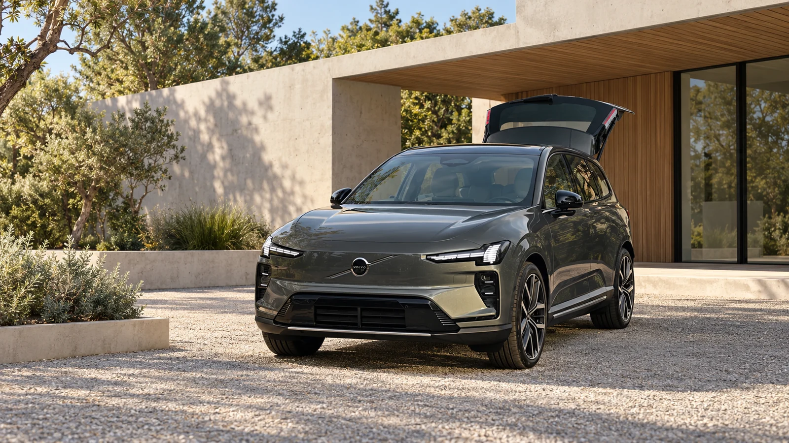
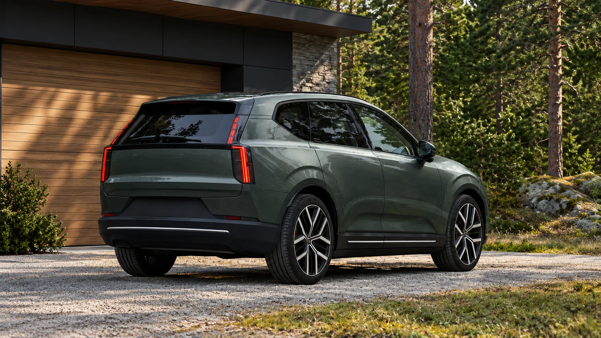

First, identify the version
A family EV is bought for hundreds of ordinary journeys. The useful question is whether it makes those journeys easy, not whether the most expensive future version wins a range comparison. With the EX60, that distinction begins with the badge: P6, P10 and P12 do not share one universal range figure.
Volvo lists up to 330 miles of EPA range for the P10 on 20-inch wheels, with U.S. deliveries scheduled for fall 2026. The widely discussed 400-mile figure belongs to the P12: it is preliminary, applies to 20-inch wheels and accompanies a 2027 delivery schedule. It is not an EPA result for the current P10.
| P10, 20-inch wheels | Up to 330 miles, EPA |
|---|---|
| P12, 20-inch wheels | Up to 400 miles, preliminary; deliveries in 2027 |
| P10 manufacturer acceleration | 0–60 mph in 4.4 seconds |
The U.S. model page gives a starting MSRP of $59,795 for the range. That starting figure is not the price of a fully equipped P10. Buyers should compare the same trim, destination charges and options before treating two advertised prices as competitors.

Read the rating before planning the journey
Volvo’s published P10 range applies to the specified 20-inch wheels. When considering a larger wheel package or a different trim, confirm the official figure for that configuration rather than transferring the headline number across the range.
A certification-based figure gives the comparison a defined basis. It is not a guarantee for a particular journey. Speed, temperature, load and the route change the demands on the battery. Plan charging stops with an appropriate reserve instead of treating the published maximum as a fixed trip distance.
For a household, the useful comparison starts with its regular routes and charging access. Establish the longest routine journey, where the car can recharge and how much flexibility the itinerary needs. Those practical inputs help turn an official range figure into a buying question without inventing a road-test result.
Charging is a session, not a peak number
Volvo publishes an optimal 10-to-80-percent charging estimate of 16 minutes for the P10 at a 400-kW station. The manufacturer qualifies the timing for suitable conditions. A station rating is not continuous charging power; starting charge, battery temperature and the charging curve influence the stop.
For a family trip, the more useful comparison is time added to a complete route. That includes reaching the charger, waiting for a bay and buying enough energy for the next leg. At home, the question changes again: a reliable overnight connection can matter more than a spectacular fast-charge headline.
The EX60 introduces Volvo’s SPA3 architecture. A new platform offers room for improvement, but the buyer still needs answers at the level of a particular car: which equipment is included, which range rating applies and when that configuration can be delivered.

The cabin has to work every morning
The official equipment list can establish which displays and functions are offered. It cannot establish how quiet the car feels on your road or how convenient every control will be for your household. Those should remain questions for a personal demonstration rather than conclusions presented as an AutoGlob review.
A prospective owner can examine that trade-off without a test track. During a dealer demonstration, change the temperature, redirect the vents and recover the navigation screen. Try the functions in the order you use them on a rushed morning. A pleasing display should also make routine adjustments straightforward.
The P10 makes the strongest case when its actual configuration suits the household: sufficient highway margin, convenient charging and controls everyone can use. The future P12’s bigger range number does not answer those questions. The right EX60 is the one that makes the family’s real itinerary easier.
Sources & image references
Official Volvo U.S. specifications checked October 13, 2026. This article analyzes manufacturer-published figures only.
Keep exploring